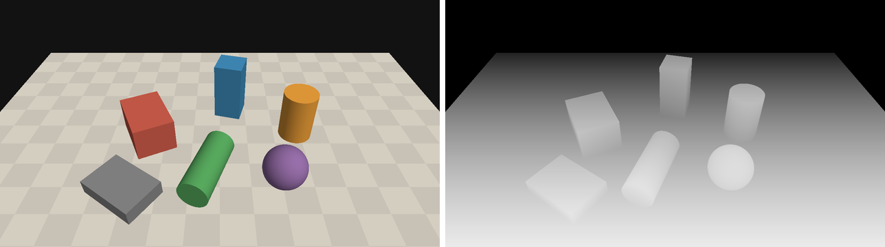
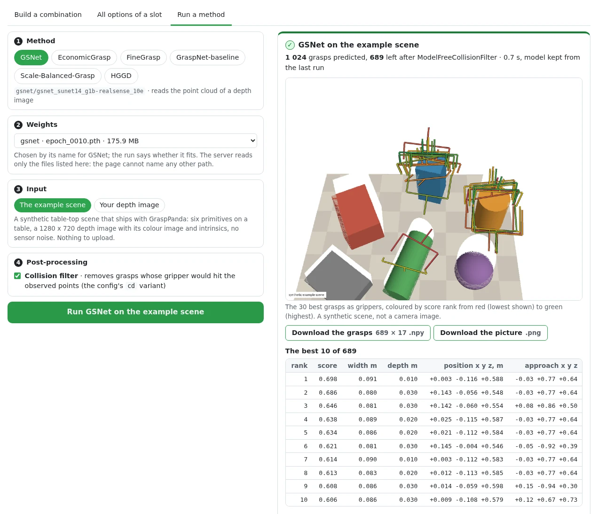

Inference and visualisation¶
Four tools take a trained detector off the benchmark:
| Tool | What it does |
|---|---|
grasppanda demo |
grasps on one frame, as numbers, a picture and an animation |
grasppanda explore |
the same in a browser page: pick a method and a weights file, run it on the example scene or on your depth image |
GraspInferencer |
the same from Python: a depth image or a point cloud in, a GraspGroup out |
grasppanda analyze |
says where the AP of an evaluation comes from, and how two evaluations differ |
All command output on this page was produced by the commands shown, on the development machine (one RTX A6000, shared). Paths are as printed.
You bring the weights
The model zoo has no weights to download yet: the one model trained with GraspPanda
so far (GSNet) is not published, and the checkpoints the authors of the methods
released are under their own, mostly non-commercial, licences. No grasp checkpoint
is downloaded for you (only an image-encoder preset with pretrained: true fetches
backbone weights, through its library, and says so). You download an author
checkpoint yourself, convert it once with tools/convert_checkpoint.py, and pass the
result with --weights. Each method's page walks through it in five minutes, with the
file, its licence, the commands and what they printed when they were measured:
GSNet,
EconomicGrasp,
FineGrasp,
GraspNet-baseline,
Scale-Balanced-Grasp,
HGGD.
First grasps in five minutes¶
Without downloading anything¶
The example project trains a toy detector on a CPU in about a second. It predicts nothing useful, but it goes through every step a real method goes through, so it tells you that your installation works:
grasppanda train projects/example_project/configs/toy_train.yaml --opts runtime.run_id=toy
grasppanda demo projects/example_project/configs/toy_train.yaml \
--weights work_dirs/toy_train/toy/checkpoints/best.pth --example
--example is a synthetic table-top scene that ships with the package: six geometric
primitives on a table, ray-cast into a 1280 x 720 depth image in millimetres, a colour
image, the camera matrix and an object mask. It is computed from formulas, so it needs no
dataset and carries no dataset licence. It is not a camera image: surfaces are perfectly
smooth and there is no noise, no missing depth and no reflection.

With a real method¶
Take GraspNet-baseline: it needs no sparse-convolution library and runs on a CPU. Get
checkpoint-rs.tar from the link in
its page
(non-commercial research licence), then:
python -m tools.convert_checkpoint checkpoint-rs.tar baseline_realsense.pth \
--source-format graspnet-baseline --camera realsense
grasppanda demo graspnet_baseline/graspnet-baseline_pointnet2_g1b-realsense_18e \
--weights baseline_realsense.pth --example --collision-filter
ʕ•ᴥ•ʔ GraspPanda 0.1.0 · 6-DoF grasp detection in clutter
demo
config graspnet_baseline/graspnet-baseline_pointnet2_g1b-realsense_18e.yaml [shipped config] (hash 97137012bcda)
weights baseline_realsense.pth (sha256 f24ba97fcf30; 162 matched, 0 missing, 0 unexpected)
model GraspNetBaseline on cuda, reads points
pipeline data.test: DepthToCloud() -> SegmentationBoxWorkspace(margin=0.02, invalid_depth_foreground='include') -> RandomSample(num_points=20000)
variants raw (no post-processing), cd (ModelFreeCollisionFilter)
input synthetic example scene: 1280 x 720, 6 primitives on a table, no sensor noise (not a camera image); workspace from the scene's own object mask
cloud 20,000 points to the model, sampled from 316,254 in the workspace
grasps 880 predicted in 2.98 s (first call, includes warm-up); 285 left after ModelFreeCollisionFilter
rank score x y z width depth approach (x, y, z)
──── ───── ────── ────── ────── ───── ───── ─────────────────────
1 1.305 +0.011 -0.122 +0.595 0.091 0.030 (+0.02, +0.49, +0.87)
2 1.245 +0.170 +0.021 +0.597 0.079 0.030 (-0.15, -0.93, -0.34)
3 0.991 +0.135 -0.063 +0.556 0.090 0.020 (+0.02, +0.49, +0.87)
...
camera frame, metres: x right, y down, z forward · approach = first column of the rotation
wrote work_dirs/graspnet-baseline_pointnet2_g1b-realsense_18e/demo/grasps.npy (285, 17) float32, GraspNet layout, best first
work_dirs/graspnet-baseline_pointnet2_g1b-realsense_18e/demo/grasps.png the cloud and the 30 best grasps, red (lowest shown) to green
work_dirs/graspnet-baseline_pointnet2_g1b-realsense_18e/demo/grasps.gif 24 frames swinging around the scene
work_dirs/graspnet-baseline_pointnet2_g1b-realsense_18e/demo/example the scene as files: depth.png, rgb.png, mask.png, intrinsics.txt
What the lines say:
- pipeline is the test pipeline of the config, step by step. The demo runs exactly these steps on the input; it has no preprocessing of its own.
- cloud: the workspace crop left 316,254 points and the model was given 20,000 of them.
- grasps: how many the model emitted, and how many the collision filter kept. The
time is that of the first call, which includes loading GPU kernels; later calls are
faster. On the CPU of the same machine (
--device cpu) this call took 1.0 s. - The picture draws the 30 best grasps (
--top-k) as wire-frame grippers, coloured by score rank.--showopens the same scene in an interactive Open3D window if you have a display andpip install -e ".[vis]".
What the result does not say: how good the method is. The scene is synthetic and outside the training distribution of every model here; whether a grasp would hold is not checked. For numbers, see Training and testing and Reading an analysis.
The five methods¶
Every shipped method runs through the same command. What differs is what each reads and how its authors' checkpoint is converted:
| Method | Config | Reads | --source-format |
Needs |
|---|---|---|---|---|
| GraspNet-baseline | graspnet_baseline/graspnet-baseline_pointnet2_g1b-realsense_18e |
points | graspnet-baseline |
nothing extra |
| Scale-Balanced-Grasp | scale_balanced_grasp/sbg_pointnet2-transformer_g1b-realsense_18e |
points | scale-balanced-grasp |
nothing extra |
| HGGD | hggd/hggd_r34w8_g1b-realsense_15e (or -kinect_) |
colour and depth images, intrinsics, points | hggd |
a colour image |
| GSNet | gsnet/gsnet_sunet14_g1b-realsense_10e |
points | graspness-unofficial |
an spconv extra |
| EconomicGrasp | economicgrasp/economicgrasp_sunet14_g1b-realsense_10e (or -kinect_) |
points | economicgrasp |
an spconv extra |
All five were run with --example --collision-filter and on a GraspNet-1Billion frame
while this page was written. Weights for a RealSense config were trained on RealSense
D435 images, weights for a Kinect config on Azure Kinect images.
Your own camera¶
What you need¶
- A depth image: single-channel, 16-bit PNG or TIFF (or a
.npy). An integer image is read as millimetres, a float image as metres;--depth-scale Nsays otherwise (Ndepth units per metre). - The intrinsics of the depth camera in pixels:
--intrinsics fx,fy,cx,cy, or a file holding those four numbers or the 3 x 3 camera matrix. They must be the intrinsics of the resolution the image has. - For HGGD, the colour image registered to the depth image, pixel for pixel
(
--rgb). Point-cloud methods ignore it, except to colour the picture.
grasppanda demo graspnet_baseline/graspnet-baseline_pointnet2_g1b-realsense_18e \
--weights baseline_realsense.pth --depth camera/depth.png --intrinsics 925,925,640,360 \
--workspace -0.25 -0.2 0.35 0.25 0.2 0.8 --collision-filter --out work_dirs/camera_baseline
input camera/depth.png: 1280 x 720 uint16, read as millimetres
cloud 20,000 points to the model, sampled from 445,990 in the workspace
grasps 942 predicted in 3.51 s (first call, includes warm-up); 240 left after ModelFreeCollisionFilter
(The files here are the example scene, written to disk by --example. They stand in for
a camera so that the command can be shown with its output.)
The workspace matters¶
The point-cloud methods were trained and tested on clouds cropped to the objects: the
GraspNet-1Billion pipelines crop to a box around the ground-truth segmentation, at
test time too (which is why their results are stamped gt_assisted: [workspace]). Your
camera has no ground truth. The inferencer does not pretend otherwise; it does what the
input allows and says what it did:
| You pass | What happens |
|---|---|
--workspace XMIN YMIN ZMIN XMAX YMAX ZMAX |
only points inside this box of the camera frame are kept (metres; x right, y down, z forward) |
--mask FILE (object pixels non-zero, from any segmentation) and --table-from-camera FILE |
the config's own provider runs, with your mask in the place of the dataset's segmentation |
--mask FILE alone |
the same kind of crop with the box aligned to the camera axes instead of the table; a note says so |
| nothing | every pixel with depth is used, and a note says what that means |
The note of the last case, as printed:
note The test pipeline of this config crops the cloud with SegmentationBoxWorkspace, which reads a ground-truth segmentation; the weights were trained and tested on clouds cropped that way. No mask was given, so every pixel with depth is used. Expect grasps on the surroundings too and fewer points on the objects; pass mask=... (object pixels) or workspace=... (a box in the camera frame) to restrict the input.
cloud 20,000 points to the model, sampled from 699,022 in the workspace
HGGD is the exception: its pipeline has no workspace (NoWorkspace), it reads the whole
image.
grasppanda demo hggd/hggd_r34w8_g1b-realsense_15e --weights hggd_realsense.pth \
--depth camera/depth.png --rgb camera/rgb.png --intrinsics 925,925,640,360 --collision-filter
model HGGD on cuda, reads depth, intrinsics, points, rgb
pipeline data.test: DepthToCloud() -> NoWorkspace() -> RandomSample(num_points=25600)
variants raw (no post-processing), cd (ModelFreeCollisionFilter + GraspNMS)
input camera/depth.png: 1280 x 720 uint16, read as millimetres; colour camera/rgb.png
cloud 25,600 points to the model
grasps 470 predicted in 4.09 s (first call, includes warm-up); 72 left after ModelFreeCollisionFilter + GraspNMS
The usual mistakes¶
Each ends with exit code 1 and one line that says what to change. Verbatim:
$ grasppanda demo ... --depth camera/depth.png
✗ InputError: --depth needs --intrinsics fx,fy,cx,cy: the focal lengths and the principal point of the depth camera in pixels. Without them a depth image cannot become a point cloud. Your camera's SDK reports them (RealSense: rs-enumerate-devices -c).
$ grasppanda demo ... --depth camera/depth.png --intrinsics 925,925,640,360 --depth-scale 1
✗ InputError: the depth image (median value 545, depth_scale=1) has a median range of 545 m. The values are probably millimetres: pass depth_scale=1000 (--depth-scale 1000).
$ grasppanda demo ... --depth camera/depth.png --intrinsics 925,925,640,360 --workspace -0.2 -0.2 1.5 0.2 0.2 2.0
✗ InputError: the workspace is empty: no pixel with depth lies inside it (CameraBoxWorkspace). The cloud spans x -0.45 to 0.45, y -0.19 to 0.16, z 0.42 to 0.84 metres in the camera frame (x right, y down, z forward).
$ grasppanda demo hggd/hggd_r34w8_g1b-realsense_15e --weights hggd_realsense.pth --depth camera/depth.png --intrinsics 925,925,640,360
✗ InputError: HGGD reads the colour image; pass the colour image registered to the depth image: rgb=... (--rgb FILE)
Intrinsics of another resolution, a colour image of another size than the depth image, a colour-mapped picture of depth instead of a depth image, and a cloud in millimetres are refused in the same way.
Point clouds and dataset frames¶
--points cloud.npy|.ply|.pcd takes a cloud in the camera frame, in metres, that you
have already cropped to the workspace. The image-space steps of the pipeline do not
apply to it; sampling and input features do. A method that reads images refuses it and
lists what it needs instead.
--frame graspnet1b:scene_0100/realsense/0000 reads a frame of the dataset the config
names, through the config's own dataset reader:
input dataset frame graspnet1b:scene_0100/realsense/0000, read by the config's dataset reader
cloud 15,000 points to the model, sampled from 519,612 in the workspace; ground-truth-assisted inputs: workspace
grasps 1024 predicted in 2.58 s (first call, includes warm-up); 816 left after ModelFreeCollisionFilter
The grasps are those grasppanda test dumps for that frame. This is tested, not
assumed (tests/integration/test_inference_api.py): for GraspNet-baseline,
Scale-Balanced-Grasp, GSNet and EconomicGrasp the arrays are bit-identical to the
engine's dump on all eight frames compared, raw and collision-filtered, and the same
holds for GSNet on GraspClutter6D frames. HGGD draws random numbers while it predicts
(it jitters its regions). A test run seeds once and draws frame after frame; a call
here seeds per call. HGGD therefore reproduces the first frame of a run (within 1e-5;
two runs of the same GPU kernels differ by 2e-7) and gives another, equally valid, draw
for later frames.
Run in the browser¶
grasppanda explore serves the combination explorer on your
machine. Give it weights and its tab Run a method runs a ported method in the page,
with no code:
grasppanda explore --weights-dir ~/grasppanda_weights # every .pth, .pt, .tar, .ckpt under it
grasppanda explore --weights gsnet=work_dirs/gsnet/<run>/checkpoints/epoch_0010.pth \
--weights hggd=hggd_realsense.pth # or files by name (repeatable)

The panel has four steps and a button:
- Method: one of the six ported methods. When you have changed slots in Build a combination, the panel also offers with your changes (or press Run this selection on a scene there): the composed config runs, so the weights must fit the composed model. A change of post-processing or of the training recipe keeps the model; a new stage needs weights trained with it.
- Weights: the files the server was started with. A file whose name suggests the
method is chosen for you (
gsnet,hggd_author_realsense.pth); the run says whether it fits. - Input: the built-in example scene, or your depth image: a 16-bit PNG in millimetres
or a
.npyin metres, at most 20 MB and 4096 pixels a side, with the intrinsicsfx,fy,cx,cyin pixels (pasting925,925,640,360into one box fills all four), an optional colour image (HGGD needs it) and an optional workspace box in the camera frame. - Post-processing: the collision filter, the config's
cdvariant, as--collision-filterapplies it.
Run shows each step while it happens (building the model and loading the weights,
reading the input, predicting, post-processing, drawing), then the picture
grasppanda demo draws, the best ten grasps, the counts through the post-processing
chain, two downloads (every grasp as the (G, 17) array of grasps.npy, and the picture),
the lines demo prints under What ran, and the commands that do the same in a terminal.
On the development machine (one RTX A6000, shared) the first run after the server started
took 7.9 s for GSNet on the example scene, most of it building the model, loading 176 MB of
weights and the first CUDA calls; switching to HGGD took 2.3 s, and GraspNet-baseline on
the example scene uploaded as depth.png with the workspace box of
Your own camera 1.0 s, with the same 942 predicted and 240 kept as the
command there. Running the same method again keeps its model in memory.
When a run cannot go ahead, the panel says why in the words of grasppanda demo: weights
that do not fit the config (WeightMismatchError with its list of keys), a missing optional
library (MissingDependencyError with the pip install line), an input the inferencer
refuses (InputError: no intrinsics, a colour-mapped picture instead of a depth image, an
empty workspace, HGGD without a colour image), a GPU without free memory, another run in
progress.
What the server allows, and nothing more:
- It listens on
127.0.0.1only, answers requests addressed to a loopback name, and takes a run only from its own page (Host and Origin are checked; a run is JSON, which a page of another site cannot send without the server's consent). - It reads weights only from the files its command line named: under
--weights-dir(resolved, so..and links that leave the folder are refused) and each--weights NAME=PATH. The page picks one of those; a path it sends is never opened as it is. - An upload is limited to 20 MB, checked against the format its name claims, and decoded
into a temporary directory that is removed when the run ends. A run writes nowhere else
and downloads nothing (a composed selection is built with
pretrained: false, since the weights file supplies every parameter). The only other file the server ever writes is a composed config you ask it to save, into the working directory. - One run at a time: a second request is answered with "another run is in progress".
- A run predicts on one frame. Nothing is trained.
--device cpu runs on the CPU. On the documentation site the tab is
greyed, with the command that enables it, since a run needs your weights on your computer.
From Python¶
import numpy as np
from PIL import Image
from grasppanda import GraspInferencer
inferencer = GraspInferencer(
"graspnet_baseline/graspnet-baseline_pointnet2_g1b-realsense_18e", "baseline_realsense.pth"
)
depth = np.array(Image.open("camera/depth.png")) # (720, 1280) uint16, millimetres
grasps = inferencer(
depth=depth,
intrinsics=(925.0, 925.0, 640.0, 360.0), # fx, fy, cx, cy in pixels
depth_scale=1000.0, # depth units per metre
workspace=(-0.25, -0.2, 0.35, 0.25, 0.2, 0.8), # a box in the camera frame, metres
collision_filter=True,
)
best = grasps.sort_by_score()[0]
print(len(grasps), "grasps in frame", repr(grasps.frame), "score:", grasps.score_kind)
print("grasp point ", best.translation[0].tolist())
print("approach axis ", best.rotation[0, :, 0].tolist())
print("width, depth ", float(best.width), float(best.depth))
print("array ", grasps.to_graspnet_array().shape, grasps.to_graspnet_array().dtype)
240 grasps in frame 'camera' score: predicted_quality_x_tolerance
grasp point [-0.23671351373195648, -0.01879783719778061, 0.6439999938011169]
approach axis [0.022774772718548775, 0.4925254285335541, 0.8700000047683716]
width, depth 0.10000000149011612 0.009999999776482582
array (240, 17) float32
The call takes exactly one kind of input: depth= with intrinsics= (and rgb=,
mask=, depth_scale=, table_from_camera=, workspace=), or points=, or
frame=. It returns a GraspGroup:
| Field | Meaning |
|---|---|
translation (G, 3) |
the grasp point between the fingers, metres |
rotation (G, 3, 3) |
column 0 the approach direction, column 1 the closing direction, column 2 the finger-height direction |
width (G,) |
jaw opening, metres |
depth (G,) |
how far the fingers reach past the grasp point along the approach, metres |
score (G,) |
higher is better; score_kind says what it is. It is not a calibrated probability |
frame |
camera: the optical frame of the depth sensor, x right, y down, z forward |
to_graspnet_array() gives the 17 columns other GraspNet tools read:
[score, width, height, depth, R (9, row-major), t (3), object_id]. To move the grasps
into your robot's base frame, apply your hand-eye calibration as a 4 x 4 tensor:
grasps.transform(base_from_camera, frame="base").
Things worth knowing:
- Order. Grasps come in the order the detector emits them. Use
sort_by_score(). - Repeatable. Point sampling and the detector's random draws are seeded per call, from
the config (
data.<split>.dataset.seed,runtime.seed), so the same input gives the same grasps.seed=changes both. - Post-processing.
collision_filter=Trueapplies the config's variant that holds a collision filter (cdin the shipped configs);variant="name"applies any chain ofevaluation.variants. The filter tests the gripper against the observed points only; it knows nothing about what the camera did not see. - Two halves.
inferencer.observe(...)returns theObservationthe model reads (the sampled cloud, the cloud before sampling, the images),inferencer.predict(observation)the grasps. Use them to look at what the pipeline did to your input. - Warnings. Differences from the conditions of the test pipeline (no mask where the
pipeline crops with one, a cloud that cannot be checked for a crop) are raised once per
inferencer as
InferenceWarning.
What is not claimed¶
The weights were trained on GraspNet-1Billion: two cameras, 1280 x 720, objects on a table 0.4 to 0.7 m away. Nothing here has been measured on another camera, another resolution or a real robot. HGGD needs an image whose size is a multiple of its 640 x 360 network input, with the same aspect ratio. Treat grasps on your own data as predictions of a model outside its test conditions until you have checked them on your setup.
Reading an analysis¶
grasppanda test writes one result record per post-processing variant into
<run>/results/. grasppanda analyze reads those records and nothing else: no dataset,
no weights, no predictions.
grasppanda test graspnet_baseline/graspnet-baseline_pointnet2_g1b-realsense_18e \
--weights baseline_realsense.pth \
--opts data.test.dataset.split=test_seen data.test.dataset.frame_step=64 \
runtime.work_dir=work_dirs/baseline runtime.run_id=test_seen_step64 evaluation.num_workers=4
grasppanda analyze work_dirs/baseline --variant cd --objects 5 --plot work_dirs/baseline_cd.png
work_dirs/baseline/test_seen_step64 · cd
protocol graspnet1b-sv-v1 · dataset graspnet1b · split test_seen · camera realsense
coverage 120 of 120 frames scored (100.0 %), 0 missing
extent a SUBSET of split 'test_seen': 120 of its 7,680 frames (4 of 256 frames per scene, 30 of 30 scenes). Not a benchmark number.
inputs ground-truth-assisted: workspace
post-processing ModelFreeCollisionFilter
provenance weights sha256 f24ba97fcf30 · code de7d468efc · seed 0 · 2026-10-12T16:31:51+00:00
metrics AP 0.4867 · AP0.4 0.4178 · AP0.8 0.5764 (fraction in [0, 1]; multiply by 100 for the figures papers print)
Where the precision comes from
friction threshold μ≤0.2 μ≤0.4 μ≤0.6 μ≤0.8 μ≤1 μ≤1.2 mean
────────────────── ────── ────── ────── ────── ────── ────── ──────
mean precision 0.1788 0.4178 0.5299 0.5764 0.6005 0.6166 0.4867
Share of every frame's AP by outcome of the rank that owns it (earned = the precision above):
outcome μ≤0.2 μ≤0.4 μ≤0.6 μ≤0.8 μ≤1 μ≤1.2 mean
────────────────────── ────── ────── ────── ────── ────── ────── ──────
earned 0.1788 0.4178 0.5299 0.5764 0.6005 0.6166 0.4867
lost: no force closure 0.5214 0.2824 0.1703 0.1238 0.0997 0.0836 0.2135
lost: collision 0.2931 0.2931 0.2931 0.2931 0.2931 0.2931 0.2931
lost: empty 0.0067 0.0067 0.0067 0.0067 0.0067 0.0067 0.0067
lost: unfilled ranks 0.0001 0.0001 0.0001 0.0001 0.0001 0.0001 0.0001
sum 1.0000 1.0000 1.0000 1.0000 1.0000 1.0000 1.0000
By split
split scenes frames mean μ≤0.2 μ≤0.4 μ≤0.6 μ≤0.8 μ≤1 μ≤1.2
───────── ────── ────── ────── ────── ────── ────── ────── ────── ──────
test_seen 30/30 120 0.4867 0.1788 0.4178 0.5299 0.5764 0.6005 0.6166
By scene (the 5 lowest and the 5 highest of 30; --scenes 0 lists all)
scene frames mean precision AP0.8 AP0.4 grasps/frame
──────────────────── ────── ────────────── ────── ────── ────────────
realsense/scene_0122 4 0.1866 0.2482 0.0967 155.0
realsense/scene_0124 4 0.3077 0.3535 0.2674 163.2
realsense/scene_0111 4 0.3347 0.3861 0.2471 147.0
realsense/scene_0100 4 0.3417 0.4168 0.2924 132.0
realsense/scene_0101 4 0.3905 0.4546 0.3111 125.5
…
realsense/scene_0121 4 0.6018 0.6721 0.5533 195.8
realsense/scene_0113 4 0.6135 0.7400 0.4962 204.2
realsense/scene_0116 4 0.6322 0.7470 0.6038 193.5
realsense/scene_0119 4 0.6798 0.7911 0.6571 173.8
realsense/scene_0114 4 0.6934 0.8047 0.7022 177.0
By object (the 5 that lose most of 28; percentage points of AP, mean over the friction thresholds)
object frames ranked/frame earned no closure collision empty success
────── ────── ──────────── ────── ────────── ───────── ───── ───────
0 40 8.5 3.07 1.01 4.99 0.13 0.334
7 40 8.8 3.29 1.95 2.65 0.00 0.417
58 40 9.8 7.78 1.88 2.53 0.18 0.629
66 40 9.6 4.51 2.08 2.16 0.00 0.515
8 40 8.9 2.09 1.69 1.67 0.04 0.381
earned sums to the AP over all objects; success = earned / (earned + lost), rank-weighted
Grasps
stage grasps per frame removed by this step left of the predicted
────────────────────────────── ────── ───────── ──────────────────── ─────────────────────
predicted 47,812 398.4
after ModelFreeCollisionFilter 19,235 160.3 59.8 % 40.2 %
frames with an empty prediction: 0
wrote work_dirs/baseline_cd.png
The header¶
The first block is everything a number needs before it may be quoted: protocol, split
and camera, how many frames were scored, which inputs were derived from ground truth,
the post-processing chain, and the weights and code that produced it. extent compares
the frames of the record with the split it names. This run scored every 64th frame, so
it is a subset, and the report says so in capitals. The weights are the authors' RealSense
checkpoint, converted (provenance author-ckpt), and the collision filter ran. Its AP of
0.4867 is a measurement on 120 frames; it is not the AP of GraspNet-baseline on the seen
split.
Where the precision comes from¶
AP is the mean of a precision table with one column per friction threshold μ. The first table gives the mean of each column; their mean is the AP. Here a grasp that needs μ ≤ 0.2 is rare (0.18), and most of what can be earned is earned by μ ≤ 0.8.
The second table attributes the AP. A frame's AP is a weighted sum over its 50 ranks: rank 1 owns about 9 % of it, rank 50 owns 0.04 %. Every rank either earns its share, or loses it for exactly one reason: the gripper collides with the scene (checked against the ground-truth models), nothing is between the fingers, the grasp is free but not force-closed at this μ, or the rank was never filled. The columns add up to one. In this run 29 % of the AP is lost to collisions although the model-free collision filter ran, and at μ ≤ 0.8 another 12 % to grasps that are free but do not hold.
By object applies the same split to the object each ranked grasp belongs to. The
numbers are percentage points of AP: object 0 earns 3.07 points and loses 4.99 to
collisions, more than any other object. success is the share an object's ranks earned
of what they held. Object ids are the dataset's.
By scene lists the scenes at both ends. Scenes, not frames, are the unit to think in: the four frames of a scene show the same objects.
Grasps follows the predictions through the post-processing chain. For a chain with
two steps each step has its own row. HGGD's cd variant on the same frames:
Grasps
stage grasps per frame removed by this step left of the predicted
────────────────────────────── ────── ───────── ──────────────────── ─────────────────────
predicted 53,917 449.3
after ModelFreeCollisionFilter 25,908 215.9 51.9 % 48.1 %
after GraspNMS 7,954 66.3 69.3 % 14.8 %
frames with an empty prediction: 0
The split by cause and object and the per-step counts are stored in the record by
grasppanda test (fields breakdown and grasp_counts). Records written before these
fields existed are read as before; the report then gives the total the chain removed,
from the grasp counts of the run's records, and says that the rest is not recorded.
Comparing two results¶
grasppanda analyze --compare work_dirs/baseline:cd work_dirs/sbg:cd --scenes 5 \
--plot work_dirs/baseline_vs_sbg.png
A work_dirs/baseline/test_seen_step64 · cd
B work_dirs/sbg/test_seen_step64 · cd
protocol graspnet1b-sv-v1 · dataset graspnet1b · 30 paired scenes
differs: weights: A f24ba97fcf30 · B e6696a21baf5
Paired summary over scenes (mean precision of a scene; B − A)
mean A 0.4867 · mean B 0.6284 · mean difference +0.1417 · median +0.1371 · standard deviation 0.0788
95 % interval of the mean difference +0.1154 to +0.1698 (bootstrap over the 30 scenes, 10 000 resamples, seed 0)
B higher in 30 scenes, A higher in 0, equal in 0 · two-sided sign test p = 1.86e-09
Per scene, largest difference first (the 5 largest of 30; --scenes 0 lists all)
scene A B B − A
──────────────────── ────── ────── ───────
realsense/scene_0122 0.1866 0.5417 +0.3551
realsense/scene_0124 0.3077 0.6321 +0.3244
realsense/scene_0118 0.4546 0.6887 +0.2342
realsense/scene_0101 0.3905 0.6088 +0.2183
realsense/scene_0111 0.3347 0.5298 +0.1951
A:cd picks a variant of a run; --variant picks one for both. The two records must
share protocol and dataset. Whatever else differs between them (split, cameras,
ground-truth-assisted inputs, post-processing, weights, code) is listed under differs,
so that a difference in the numbers is not credited to the wrong cause.
The summary pairs scenes. The interval is a bootstrap over the paired scenes and the sign test counts in how many scenes each side is ahead; both treat a scene as one observation. On this subset Scale-Balanced-Grasp is ahead in all 30 scenes. Both are author checkpoints scored on 120 frames; the statement is about these 120 frames.
--plot draws the report: for one record the precision per friction threshold, the
share earned and lost, and every scene; for a comparison the difference of every scene
around zero. It uses Pillow only, like the renderer of grasppanda demo.